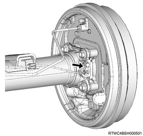

Rear wheel speed sensor installation (All models)
1. Rear wheel speed sensor preparation
Note
- Check the wheel speed sensor before installation.
- Before installing the sensor, clean the inside of the sensor installation hole and installation surface of the sensor bracket, and the installation surface of the sensor bracket for the knuckle and confirm that there is no foreign material such as rust and pieces of the sensor.
- Remove any foreign material such as pieces of the sensor from the inside of the mounting hole or the installation surface.
- Remove any rust on it with wire brush or the like.
Caution
- When rust penetrant is used to remove the wheel speed sensor, clean up the part with part cleaner or the like.
2. Rear wheel speed sensor safety information
Caution
- When installing the sensor, use your hand to push the sensor installation flange until it is firmly attached to the installation surface, and then tighten the bolt.
- When inserting the sensor, do not pry or strike it with a tool.
- Do not tighten the fixing bolts for the sensor body with an air tool, but temporarily tighten by hand and then fully tighten them.
- After tightening the bolts, confirm that there is no gap between the installation flange and the installation surface again.
- Install the sensor harness using the twist prevention line as a reference to avoid twisting.
- Be careful not to pull the harness forcibly, which may result in disconnection.
- Confirm that there is no harness interference.
3. Rear wheel speed sensor installation
1. Install the wheel speed sensor to the rear axle case.
Tightening torque： 8 N・m { 0.8 kgf・m / 71 lb・in }
Note
- The following applies to rear disc brake models.

Note
- The following applies to rear drum brake models.

2. Connect the harness clip to the harness.
Note
- Install the harness fixing bolt, and tighten it to the specified torque.
Tightening torque： 8 N・m { 0.8 kgf・m / 71 lb・in }
4. Rear wheel speed sensor connect
1. Connect the harness connector to the wheel speed sensor.
5. Rear wheel speed sensor inspection
Note
- Check the following after installation of the wheel speed sensor.
- Turn the ignition switch ON, and confirm that the ABS warning light turns off after it illuminates for approximately 3 seconds.
- Start the engine and drive the vehicle straight forward from the stopped state. Slowly accelerate to 15 km/h (9 mph) and then slowly apply the brake until the vehicle stops. Confirm that no abnormal noise or problem in braking force during this procedure.
- Confirm whether the following symptom occurs during verification actions above.
- The ABS warning light turns on, or does not turn off.
- ABS operation noise or motor rotation noise is caused.
- Brake pedal kickbacks are felt.
- The target braking force is not produced.
- When the above symptom occurs, take the following action.
- Check the installation status of the wheel speed sensor and connection status of the connector.
- Check the DTCs, and perform inspection and take remedies for the ABS system in accordance with the diagnostic procedure for each DTC.
Caution
- Since the ABS rotates the motor for a moment right immediately after the vehicle is started, sound of rotating motor may be heard.
- This is the operation for initial check task and not at fault.